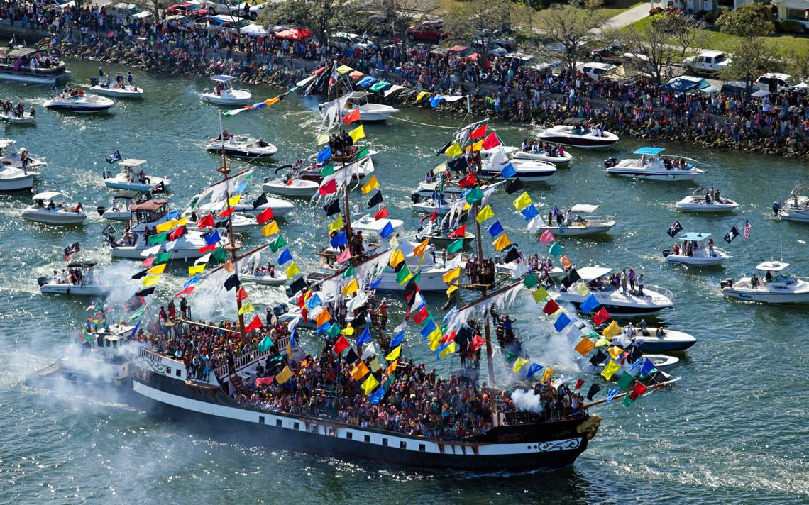

Upcoming Community Events
Annual Gasparilla Festival brings the community together
Featured Event: Annual Hyde Park Historic Home Tour
Date: December 15, 2024
Time: 10:00 AM – 4:00 PM
Cost: $25 per person
Description: Tour some of Hyde Park's most beautiful historic homes, including Victorian mansions and Colonial Revival houses dating back to the early 1900s.
Monthly Events Calendar
| Date | Event | Time | Location | Cost |
|---|---|---|---|---|
| Dec 3, 2024 | Community Board Meeting | 7:00 PM | Hyde Park Methodist Church | Free |
| Dec 7, 2024 | Holiday Tree Lighting | 6:00 PM | Hyde Park Village | Free |
| Dec 10, 2024 | Neighborhood Cleanup Day | 9:00 AM | Bayshore Boulevard | Free |
| Dec 15, 2024 | Historic Home Tour | 10:00 AM – 4:00 PM | Various Locations | $25 |
| Dec 21, 2024 | Winter Solstice Walk | 5:30 PM | Bayshore Boulevard | Free |
| Jan 7, 2025 | New Year Community Meeting | 7:00 PM | Hyde Park Methodist Church | Free |
Community Services
The Hyde Park Community Board provides various services to enhance the quality of life for our residents:
- Neighborhood Watch Program: Volunteer-based safety program with monthly briefings and patrols.
- Historic Preservation Committee: Guidance and support for historic home restoration.
- Traffic & Transportation: Advocacy for safer streets and better public transit.
- Environmental Initiatives: Tree planting, recycling education, and green space preservation.
Get Involved - Volunteer Opportunities
- Event Planning Committee: Help organize community events and festivals
- Newsletter Editor: Assist with our monthly community newsletter
- Social Media Coordinator: Manage our Facebook and Instagram accounts
- Beautification Team: Help maintain community gardens and public spaces
- Welcome Committee: Greet new residents and provide neighborhood information
Community Resources
- Tampa Police (Non-Emergency): (813) 231-6130
- Tampa Fire Rescue: (813) 274-7000
- City of Tampa 311: (813) 274-3111
- Tampa Electric (TECO): (813) 223-0800
- Tampa Water Department: (813) 274-8811
- Hillsborough County Schools: (813) 272-4000
Local Schools Serving Hyde Park:
- Gorrie Elementary School
- Wilson Middle School
- Plant High School
- Academy of the Holy Names (Private)